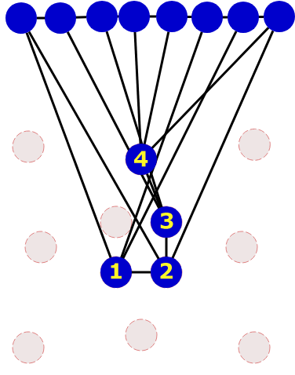
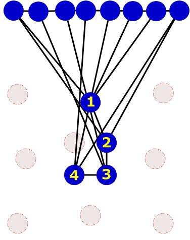
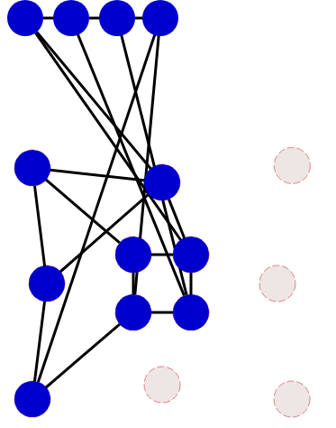

Solution
On peut alors compléter la figure en plaçant les ronds restants.

On peut alors progresser en plaçant les trois ronds voisins.

Et de là, on peut placer les quatre derniers ronds et compléter ainsi la figure.
On peut commencer par compter le nombre de traits qui partent de chaque rond, dans la figure rouge. Il y a 4 ronds qui ont 4 voisins, et tous les autres ont 3 voisins. Ceux qui ont 4 voisins forment une chaîne, c'est-à-dire qu'ils sont reliés entre eux l'un après l'autre.

Pour y voir plus clair, on peut trier les ronds bleus, en faisant un groupe en haut avec les ronds ayant 3 voisins, et un groupe en bas avec les ronds ayant 4 voisins. On essaye autant que possible de trouver un ordre pour les ronds qui permet de "déméler" les noeuds.

Pour placer les 4 ronds ayant 4 voisins, il n'y a que deux possibiltés : soit on commence par placer en haut le rond de bleu gauche, soit celui de droite. Essayons d'abord de placer celui de droite, par exemple.
Mais là, on a un problème. Lorsqu'on essaie placer un rond ayant 3 voisins, par exemple celui qui était tout en haut à droite, on se retrouve coincé, car ce rond bleu ne correspond à aucun rond rouge.

C'est donc qu'on s'est trompé. Revenons en arrière, et plaçons les 4 ronds ayant 4 voisins dans l'autre sens. On peut alors trouver une place pour le rond ayant 3 voisins.

On peut maintenant placer les autres ronds et compléter la figure.

C'est de l'informatique !
Ce défi illustre le problème de faire correspondre un graphe, c'est-à-dire un ensemble de ronds dont certains sont reliés par des traits, avec un autre graphe ayant la même structure.
Ce problème, connu sous le nom d'isomorphisme de graphe, est particulièrement difficile : il n'existe aucun algorithme capable de résoudre efficacement ce problème pour des graphes quelconques.
Néanmoins, pour des graphes particuliers, comme par exemple ceux que l'on a considéré ici, il existe de nombreuses astuces permettant de mettre un graphe en correspondance avec un autre sans y passer des heures. Il est possible de programmer de telles astuces, comme par exemple celle décrite ici, qui consiste à étudier le nombre de voisins de chaque rond.